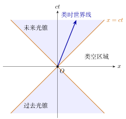
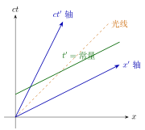

前六章改变了力学的描述语言，却始终默认不同惯性系共享同一个时间。现在要检验这个假设：若所有惯性观察者测得的真空光速相同，时间和空间还能分别独立变换吗？本章依次建立洛伦兹变换、时空几何和相对论动力学，并用低速极限检验它们。学习后应能区分事件与物体、坐标时间与固有时、总能量与动能，并能用四动量守恒处理碰撞。
7.1经典时空观的边界
7.1.1事件、时钟同步与两个基本原理
一次闪光或两粒子相遇发生在确定地点和时刻，称为一个事件。在惯性系 \(S\) 中用 \((t,x,y,z)\) 标记事件。这里的 \(t\) 是该地点静止且已同步的时钟读数，并不等于远处观察者收到光信号的时刻。远处钟的同步采用爱因斯坦约定：光在 \(t_1\) 发出、经远处反射后于 \(t_2\) 返回，把反射时刻定义为 \((t_1+t_2)/2\)。
伽利略变换 \(x'=x-vt,t'=t\) 给出速度变换 \(u'_x=u_x-v\)。若 \(u_x=c\)，便有 \(u'_x=c-v\)，与惯性系中的真空光速不变不能同时成立。因此需要重新审视绝对时间，而非把牛顿方程中的质量随意改成速度的函数。
狭义相对论的两个基本原理是：物理定律在所有惯性系中具有相同形式；真空中光的传播速度为 \(c\)，与光源的运动状态无关。以下只讨论平直时空中的惯性坐标，不引入引力时空曲率。
光速 \(c\) 也是时空结构中的不变速度。它限制局域信息传播；介质中的光速可以小于 \(c\)，不能把介质光速代入下面的时空变换。
7.1.2洛伦兹变换的推导
设 \(S'\) 相对 \(S\) 沿 \(+x\) 方向以速度 \(v\) 匀速运动，坐标轴平行，原点在 \(t=t'=0\) 重合。时空均匀性要求变换为线性，且 \(S'\) 原点满足 \(x=vt\)，故写成 \[x'=A(x-vt),\qquad t'=Bt+Dx.\] 对沿正、负 \(x\) 传播的光线分别代入 \(x=ct,x'=ct'\) 和 \(x=-ct,x'=-ct'\)，得到 \[A(c-v)=cB+c^2D,\qquad A(c+v)=cB-c^2D.\] 相加、相减给出 \(B=A,D=-Av/c^2\)。空间各向同性与惯性系互易性要求逆变换具有同一形式、速度改为 \(-v\)。于是 \[x=A(x'+vt')=A^2(1-v^2/c^2)x.\] 选取 \(v=0\) 连续连接到恒等变换的正根，定义 \[\beta=\frac vc,\qquad \gamma=\frac1{\sqrt{1-\beta^2}},\qquad |v|<c,\] 得到洛伦兹变换（Lorentz transformation）： \[\boxed{x'=\gamma(x-vt),\quad t'=\gamma(t-vx/c^2),\quad y'=y,\quad z'=z.} \tag{7.1}\] 逆变换由 \(v\to-v\) 且交换撇号得到。沿运动方向的空间坐标和时间坐标混合，横向坐标不变。当 \(|v|/c\ll1\)，且考虑的事件满足 \(|vx/c^2|\) 相对时间尺度可忽略时，恢复伽利略变换。
7.2同时性、时间与长度的测量
7.2.1同时性的相对性
对两个事件取差，式 (7.1) 给出 \[\Delta t'=\gamma(\Delta t-v\Delta x/c^2).\] 若它们在 \(S\) 中同时，即 \(\Delta t=0\)，但地点不同，则 \(\Delta t'=-\gamma v\Delta x/c^2\)。同时性是对一组空间分离事件的坐标判断，必须注明参考系。
例 1.1 (同时触发的两盏灯). 在 \(S\) 中，位于 \(x=0\) 与 \(x=L\) 的两灯在 \(t=0\) 同时闪光。对沿 \(+x\) 运动的 \(S'\)，右灯事件减去左灯事件的时间差是 \(-\gamma vL/c^2\)，所以右灯先闪。这里已经扣除了光传播延迟，不能用“哪束光先到眼睛”替代事件时间的比较。
7.2.2时间膨胀与固有时
一只在 \(S'\) 原点静止的钟，两次滴答之间有 \(\Delta x'=0\)。由逆变换 \[\Delta t=\gamma\Delta t'.\] 钟沿自身世界线测得的时间称为固有时 \(\Delta\tau=\Delta t'\)，故 \[\Delta t=\gamma\Delta\tau. \tag{7.2}\] 这比较的是同一只移动钟上的两个事件，而不是任意两个事件。对一般变速的有质量粒子，把路径分成短区间，在每一小段使用瞬时共动惯性系，得到 \[\mathrm{d}\tau=\mathrm{d}t\sqrt{1-u^2(t)/c^2},\qquad \tau=\int\sqrt{1-u^2(t)/c^2}\,\mathrm{d}t. \tag{7.3}\] 这里 \(u(t)\) 是粒子在所选惯性系中的速率，不能误用两个参考系之间的恒定相对速度代替。
在静止光钟中，两镜距离为 \(h\)，半次滴答用时 \(h/c\)。在横向速率为 \(v\) 的惯性系中，光在半周期内走斜线，满足 \((c\Delta t/2)^2=h^2+(v\Delta t/2)^2\)，于是 \(\Delta t=2\gamma h/c\)。改变的不是光速，而是同样两次反射事件在另一惯性系中的时空间隔。相互认为对方的钟慢并不矛盾，因为比较分离时钟时，两系采用的同时事件不同。
7.2.3长度收缩
一根杆在 \(S'\) 静止，其端点坐标之差定义固有长度 \(L_0\)。在 \(S\) 测量杆长，必须在同一 \(t\) 记录两个端点位置。令 \(\Delta t=0\)，则 \[L_0=\Delta x'=\gamma\Delta x,\qquad \boxed{L=L_0/\gamma.}\] 长度收缩只发生在相对运动方向。它是不同同时切片上端点距离的关系；照片还包含光行时效应，不能直接当作上述测长操作。
例 1.2 (明确事件再代公式). 设模型宇宙线粒子的固有平均寿命为 \(\tau_0\)，在实验室以 \(u=0.8c\) 匀速飞行，不考虑能量损失。则 \(\gamma=5/3\)，实验室平均寿命为 \(5\tau_0/3\)，平均飞行距离为 \(u\gamma\tau_0=4c\tau_0/3\)。在粒子静止系中，地面移动，而到探测器的初始距离缩为实验室距离的 \(3/5\)。两种计算对应相同的产生与探测事件。本例参数用于教学，不代表特定观测数据。
7.3时空间隔、光锥与因果性
7.3.1不变间隔
把洛伦兹变换代入直接展开： \[c^2\Delta t'^2-\Delta x'^2 =\gamma^2\bigl[(c\Delta t-v\Delta x/c)^2-(\Delta x-v\Delta t)^2\bigr] =c^2\Delta t^2-\Delta x^2.\] 横向坐标不变，因而定义不变量 \[\Delta s^2=c^2\Delta t^2-\Delta x^2-\Delta y^2-\Delta z^2. \tag{7.4}\] 本章固定采用 \((+,-,-,-)\) 号差约定。\(\Delta s^2>0\) 为类时，存在两事件同地发生的惯性系；\(\Delta s^2=0\) 为类光，可由真空光信号连接；\(\Delta s^2<0\) 为类空，存在两事件同时发生的惯性系。类空间隔不存在沿这两事件的有质量观察者固有时。

7.3.2时空图中的运动坐标轴
在 \(ct\)–\(x\) 图中，\(S'\) 的时间轴由 \(x'=0\) 给出，即 \(x=\beta ct\)；空间轴由 \(t'=0\) 给出，即 \(ct=\beta x\)。两轴都向光线倾斜，而非欧氏平面中的正交旋转。

若两事件类时分离且 \(\Delta t>0\)，有 \(|\Delta x|<c\Delta t\)。因为 \(|v|<c\)，所以 \(\Delta t'=\gamma(\Delta t-v\Delta x/c^2)>0\)。因此所有保持时间方向的惯性系都同意因果事件的先后次序；只有类空事件的顺序可以改变。
7.3.3双生子问题：比较两条世界线
设地面观察者惯性静止，飞船以速率 \(u\) 出发后掉头，以同样速率返回。忽略很短的转向阶段，地面经过时间 \(T\)，飞船经过固有时 \(T\sqrt{1-u^2/c^2}\)。二者在出发、重逢事件间沿不同世界线运动，飞船没有一个覆盖往返全过程的共动惯性系。因此不能把单程惯性系的对称性机械地应用到全过程。若转向历时不可忽略，应直接用式 (7.3) 积分；年龄差不能单独归因于某瞬间的加速度大小。
7.4速度变换与光的频移
7.4.1速度合成
对式 (7.1) 微分后相除，令 \(u_i=\mathrm{d}x_i/\mathrm{d}t\)，得到 \[u'_x=\frac{u_x-v}{1-vu_x/c^2},\quad u'_y=\frac{u_y}{\gamma(1-vu_x/c^2)},\quad u'_z=\frac{u_z}{\gamma(1-vu_x/c^2)}. \tag{7.5}\] 沿同向光线 \(u_x=c\)，立即得到 \(u'_x=c\)。若两速度均远小于 \(c\)，分母趋于 1，恢复经典合成。
例 1.3 (飞船发射探测器). 飞船相对实验室以 \(0.6c\) 前进，又在自身系中向前发射速度为 \(0.6c\) 的探测器。用逆变换，实验室速度为 \[u=\frac{0.6c+0.6c}{1+0.6^2}=\frac{15}{17}c<c.\] 有限的亚光速速度合成仍小于 \(c\)。因此不能把两个速度简单相加后再人为截断到光速。
7.4.2纵向多普勒效应
考虑在 \(S\) 中沿 \(+x\) 传播的单色平面波，相位为 \(\Phi=\omega t-kx\)，其中 \(k=\omega/c\)。波峰对应的事件集合不依赖坐标，故相位是标量。代入逆洛伦兹变换，\(t'\) 的系数给出 \[\omega'=\gamma(\omega-vk)=\gamma\omega(1-\beta),\qquad \boxed{\frac{\omega'}{\omega}=\sqrt{\frac{1-\beta}{1+\beta}}.}\] 这里 \(S'\) 沿光传播方向运动，接收者远离位于后方的静止光源，测得红移。靠近时用 \(v\to-v\)，得到蓝移。一般方向的频率变换为 \(\omega'=\gamma\omega(1-\beta\cos\alpha)\)，\(\alpha\) 是 \(S\) 中光线与 \(+x\) 的夹角。
7.5四维矢量与相对论动力学
7.5.1四位置、四速度与四动量
定义四位置 \(x^\mu=(ct,x,y,z)\)，其中 \(\mu=0,1,2,3\)。令 \[\eta_{\mu\nu}=\operatorname{diag}(1,-1,-1,-1),\qquad A\cdot B=\eta_{\mu\nu}A^\mu B^\nu =A^0B^0-\mathbf A\cdot\mathbf B.\] 重复的上下指标求和。与四位置按同一线性规则变换的量称为四矢量；不是任意四个数都构成四矢量。对有静质量且 \(u<c\) 的粒子，由固有时不变定义 \[U^\mu=\frac{\mathrm{d}x^\mu}{\mathrm{d}\tau}=\gamma_u(c,\mathbf{u}),\qquad U\cdot U=c^2,\qquad \gamma_u=(1-u^2/c^2)^{-1/2}.\] 质量 \(m\) 在本章始终指不变质量。四动量定义为 \[P^\mu=mU^\mu=(E/c,\mathbf{p}),\qquad \mathbf{p}=\gamma_um\mathbf{u},\qquad E=\gamma_umc^2. \tag{7.6}\] 这个定义在低速下给出 \(\mathbf{p}\to m\mathbf{u}\)；下一节从作用量得到相同结果。由 \(P\cdot P=m^2c^2\) 推得 \[\boxed{E^2=p^2c^2+m^2c^4.} \tag{7.7}\] 静止时有 \(E_0=mc^2\)；动能是 \(K=E-mc^2\)。展开 \[E=mc^2+\frac12mu^2+\frac38\frac{mu^4}{c^2}+O(u^6/c^4),\] 恢复牛顿动能。对光子不能使用不存在的光子静止系或固有时参数，应直接使用 \(m=0\) 的质量壳关系 \(E=pc\)，并结合量子关系 \(E=\hbar\omega\)。
7.5.2三维力与功率
在指定惯性系中定义三维力 \(\mathbf{F}=\mathrm{d}\mathbf{p}/\mathrm{d}t\)。对恒定不变质量粒子，\(\dot\gamma_u=\gamma_u^3\mathbf{u}\cdot\mathbf{a}/c^2\)，所以 \[\mathbf{F}=m\gamma_u\mathbf{a}+ \frac{m\gamma_u^3}{c^2}(\mathbf{u}\cdot\mathbf{a})\mathbf{u}. \tag{7.8}\] 沿瞬时速度与垂直方向分解：\(F_\parallel=m\gamma_u^3a_\parallel\)，\(\mathbf{F}_\perp=m\gamma_u\mathbf{a}_\perp\)。因此一般不能写 \(\mathbf{F}=m\mathbf{a}\)，也不能统一用一个“相对论质量”解决所有方向的关系。对质量壳关系求导，利用 \(\mathbf{u}=c^2\mathbf{p}/E\) 得 \[2E\dot E=2c^2\mathbf{p}\cdot\dot\mathbf{p}, \qquad \boxed{\dot E=\mathbf{F}\cdot\mathbf{u}.}\] 四力为 \(f^\mu=\mathrm{d}P^\mu/\mathrm{d}\tau=\gamma_u(\mathbf{F}\cdot\mathbf{u}/c,\mathbf{F})\)，并满足 \(f\cdot U=0\)。这一正交性使用了质量恒定的假设。
例 1.4 (恒定力不能把有质量粒子推到光速). 一维恒力 \(F>0\) 作用于初始静止粒子。由 \(\dot p=F\) 得 \(p=Ft\)，于是 \[u(t)=\frac{c^2Ft}{\sqrt{m^2c^4+F^2t^2c^2}} =\frac{Ft/m}{\sqrt{1+(Ft/mc)^2}}.\] 积分并令 \(x(0)=0\)，得到 \[x(t)=\frac{mc^2}{F}\left[\sqrt{1+(Ft/mc)^2}-1\right].\] 当 \(Ft\ll mc\)，有 \(x\simeq Ft^2/(2m)\)；任意有限 \(t\) 均有 \(u<c\)，长期作用使动量、能量继续增大，而速度渐近于 \(c\)。
7.6相对论的作用量与哈密顿描述
自由粒子的轨迹不应依赖所选惯性坐标。最简单的局域几何作用量与世界线固有时成正比。取系数使低速动能正确，写为 \[S=-mc^2\int\mathrm{d}\tau=\int L\mathrm{d}t,\qquad L=-mc^2\sqrt{1-u^2/c^2}. \tag{7.9}\] 低速展开为 \(L=-mc^2+mu^2/2+\cdots\)，常数不改变运动方程。对速度求偏导， \[p_i=\frac{\partial L}{\partial u_i}=\gamma_u m u_i.\] 自由粒子 \(L\) 不依赖位置，欧拉–拉格朗日方程给出 \(\dot\mathbf{p}=0\)。勒让德变换得到 \[H=\mathbf{p}\cdot\mathbf{u}-L =\gamma_u m u^2+mc^2/\gamma_u =\gamma_u mc^2=\sqrt{m^2c^4+p^2c^2}.\] 哈密顿方程 \(\dot x_i=\partial H/\partial p_i=c^2p_i/H\) 正好恢复速度与动量的关系。这说明第六章的正则结构可以保留，需要更换的是与相对论时空相容的作用量。
加入电磁耦合 \(L=-mc^2\sqrt{1-u^2/c^2}+q\mathbf{A}\cdot\mathbf{u}-q\phi\)，正则动量为 \(\mathbf{p}_{\rm can}=\gamma_um\mathbf{u}+q\mathbf{A}\)。机械动量 \(\mathbf\pi=\mathbf{p}_{\rm can}-q\mathbf{A}\) 与正则动量必须区分，哈密顿量为 \[H=\sqrt{m^2c^4+c^2(\mathbf{p}_{\rm can}-q\mathbf{A})^2}+q\phi.\] 正则方程给出 \(\dot{\mathbf\pi}=q(\mathbf{E}+\mathbf{u}\times\mathbf{B})\)，功率为 \(q\mathbf{E}\cdot\mathbf{u}\)；磁场改变动量方向而不直接做功。这里将场视为给定外场，不计辐射反作用。所需基础是第三、六章的电磁耦合与偏导数运算，可结合本章末的公开讲义继续阅读。
7.7四动量守恒与粒子碰撞
7.7.1系统的不变质量
对不与外界交换能量、动量的系统，碰撞前后四动量相等： \[\sum_{\rm in}P^\mu=\sum_{\rm out}P^\mu.\] 对总能量 \(E_{\rm tot}\) 和总动量 \(\mathbf{P}_{\rm tot}\)，系统不变质量 \(M\) 满足 \[M^2c^4=E_{\rm tot}^2-c^2|\mathbf{P}_{\rm tot}|^2.\] 它一般不等于各粒子质量之和，因为质心系内的运动能和相互作用能也参与系统的质量。在总动量为零的参考系中，\(E_{\rm cm}=Mc^2\)。
例 1.5 (完全非弹性碰撞与内能). 两粒子各质量 \(m\)，在质心系以速率 \(u\) 相向运动，碰后结合成一个静止复合体，且无能量向外辐射。初动量相消，总能量为 \(2\gamma_umc^2\)。末态质量因此为 \[M=2\gamma_um>2m.\] 初始动能转化为复合体内能，质量增加量是 \(\Delta M=2(\gamma_u-1)m\)。守恒的是总四动量，而不是各物体静质量之和。若有光子逸出，必须把它们的四动量计入末态。
7.7.2固定靶反应的阈能
入射粒子质量为 \(m_a\)、实验室总能量为 \(E_a\)，靶粒子质量为 \(m_b>0\) 且初始静止。由质量壳关系，初态不变量为 \[\mathcal S=(E_a+m_bc^2)^2-c^2p_a^2 =m_a^2c^4+m_b^2c^4+2m_bc^2E_a.\] 若给定末态通道由自由粒子组成，总静质量为 \(M_f=\sum_jm_j\)，在阈值处所有末态粒子在质心系相对静止，故 \(\mathcal S_{\rm th}=M_f^2c^4\)。于是 \[E_{a,\rm th}=\frac{M_f^2-m_a^2-m_b^2}{2m_b}c^2. \tag{7.10}\] 这是运动学下限，还要满足电荷等守恒律及反应动力学条件。若该表达式低于 \(m_ac^2\)，物理上的最低入射总能量仍至少为 \(m_ac^2\)；阈动能为 \(K_{a,\rm th}=E_{a,\rm th}-m_ac^2\)（用于正阈值反应）。
例 1.6 (为何对撞比固定靶更有效？). 用假想但质量守恒条件明确的模型：两个质量均为 \(m\) 的入射粒子，末态通道总静质量为 \(4m\)。固定靶时需 \(E_{a,\rm th}=7mc^2\)，即入射动能 \(6mc^2\)。对称对撞时总动量本来为零，每束只需总能量 \(2mc^2\)，两束总动能为 \(2mc^2\)。差别来自固定靶中必须保留末态整体运动的能量。本例只说明运动学，不指定实际反应。
匀强磁场中，粒子垂直入射且忽略辐射损失。洛伦兹力大小为 \(|q|uB\)，动量方向以角速率 \(u/\rho\) 转动，因此 \(|\dot\mathbf{p}|=pu/\rho\)，得到 \(p=|q|B\rho\)。结合质量壳关系即可从弯转半径推算能量。回旋角频率为 \(|q|B/(\gamma_um)\)，不再与能量无关。这是理解同步加速思想的起点，所需基础只是圆周运动与本章动量定义；高精度束流还需第六章的正则动力学。
关键概念与常见误区
固有时属于一条类时世界线；时间膨胀须选择同一只钟上的两个事件。
测量运动杆长须同时记录两个端点，且“同时”须指定参考系。
本章 \(m\) 是不变质量，\(E\) 是总能量；光子没有静止系。
相对论中仍有能量和动量守恒；有内能变化时，各部分静质量之和不必守恒。
洛伦兹变换连接惯性坐标；变速运动可在惯性系中描述，固有时用积分计算。
本章小结
光速不变使绝对同时性失效，并把空间和时间统一为具有不变间隔的四维时空。时间膨胀、长度收缩和速度合成是同一变换的不同结果。相对论动力学用四动量统一能量和动量，用不变质量组织碰撞问题；作用量和哈密顿方法则把本章与前面的分析力学连接起来。低速极限下，经典动量、动能和运动方程逐项恢复。
分层习题
概念辨析。 两事件在某惯性系同时而不同地。证明它们不可能由亚光速信号相连。说明为何它们的时间次序可变而不违反因果性。
测量。 固有长为 \(L_0\) 的杆相对实验室以 \(0.6c\) 运动。求实验室长度；若取实验室同时测量的端点事件，求两事件在杆系中的时间差。
独立推导。 用速度变换证明：若 \(u_x=c\cos\alpha,u_y=c\sin\alpha\)，则 \(u_x'^2+u_y'^2=c^2\)。
世界线。 一飞船以 \(0.8c\) 匀速飞行，地面时间 \(10\) 年后瞬时转向，再飞 \(10\) 年返回。分别计算两者固有时，并说明转向理想化如何被平滑世界线替代。
动力学。 完成恒力例题中 \(u(t)\) 到 \(x(t)\) 的积分，验证 \(\mathrm{d}E/\mathrm{d}t=Fu\)。
四动量。 质量为 \(M\) 的静止粒子衰变为两个光子。证明光子反向且各能量为 \(Mc^2/2\)；再求沿一个光子方向以 \(v\) 运动的惯性系中两光子的能量。
综合分析。 质量为 \(m\)、总能量为 \(E\) 的粒子撞上同质量静止靶并完全结合且不辐射，求复合体质量和速度。
计算与模拟。 取 \(z=Ft/(mc)\)，画出 \(u/c=z/\sqrt{1+z^2}\) 与经典结果 \(u/c=z\)。比较 \(z=0.1,1,10\)，并检查解析能量是否满足 \(E^2-p^2c^2=m^2c^4\)。用无量纲变量可避免把单位错误误认为物理效应。
习题提示与结果
间隔为 \(-\Delta r^2<0\)；因果信号只连接类时或类光事件。
\(L=0.8L_0\)；以右端减左端，\(\Delta t'=-vL_0/c^2\)。
通分后分子利用 \(\gamma^{-2}=1-\beta^2\) 化为 \((1-\beta\cos\alpha)^2\)。
地面 \(20\) 年，飞船 \(12\) 年；有限转向时直接积分固有时。
令 \(z=Ft/(mc)\) 作积分；\(E=mc^2\sqrt{1+z^2}\)。
能量分别为 \(\gamma Mc^2(1-\beta)/2\) 与 \(\gamma Mc^2(1+\beta)/2\)；两者之和与总动量满足不变质量关系。
\(M_f=\sqrt{2m^2+2mE/c^2}\)，\(V=c\sqrt{E^2-m^2c^4}/(E+mc^2)\)。
相对论速度约为 \(0.09950c,0.70711c,0.99504c\)；经典公式只在 \(z\ll1\) 时可靠。
进一步阅读
David Tong 的剑桥大学公开讲义 Dynamics and Relativity：https://davidtong.org/teaching/dynamics-and-relativity/（查阅：2026-11-05）。其中相对论部分可用于继续学习洛伦兹几何与相对论碰撞。本章推导和例题按本书符号重新组织，未使用实际实验参数。